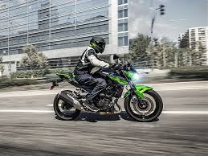
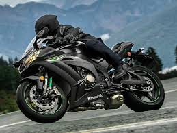

El carnet de moto está dividido en tres categorías, A1, A2 y A, que escalonan el acceso a la conducción de motos en función de su potencia y experiencia del piloto. Te explicamos qué motos puedes conducir con cada uno de ellos.
La última novedad dentro de la normativa del carnet de moto fue implantar el denominado carnet A2 el pasado 2010. Fue el método elegido por la DGT para tener un escalón intermedio entre el permiso A1 -carnet que te permite conducir motos y scooter hasta 125 cc- y el carnet A, que es el permiso con el que puedes conducir cualquier tipo de moto sin limitación de cilindrada.
Así pues, si no tienes muy claro en qué punto estás y las motos a las que puedes acceder según tu experiencia, te explicamos detalladamente cuáles son los aspectos clave de cada uno de los carnets de moto.
Según la norma, el permiso de conducción de la clase A1 autoriza para conducir motocicletas con una cilindrada máxima de 125 cm3, una potencia máxima de 11 kW (15 CV) y una relación potencia/peso máxima de 0,1 kW/kg y triciclos de motor cuya potencia máxima no exceda de 15 kW. La edad mínima para obtenerlo será de 16 años cumplidos. Los conductores que cuenten con 2 años de experiencia en el carnet B de coche, tendrán automáticamente convalidad el carnet A1 de moto.
El permiso de conducción de la clase A2 autoriza para conducir motocicletas con una potencia máxima de 35 Kw (48 CV) y una relación potencia/peso máxima de 0,2 kW/kg y no derivadas de un vehículo con más del doble de su potencia. La edad mínima para obtenerlo será de 18 años cumplidos. Si se tratase de una moto limitada con un kit de limitación para el carnet A2, la potencia original de la moto no podrá exceder los 96 CV, aproximadamente. Es decir, si te compras una moto de 100 CV no podrás limitarla para usarla con el carnet A2.
El permiso de conducción de la clase A autoriza para conducir cualquier tipo de motocicletas y triciclos de motor. La edad mínima para obtenerlo será de 20 años cumplidos pero hasta los 21 años no autorizará a conducir triciclos de motor cuya potencia máxima exceda de 15 kW. Para sacárselo, es necesario tener dos años de experiencia del carnet A2.
La licencia AM consiste en dos pruebas: un examen teórico y una parte práctica en circuito cerrado. Dicha parte práctica consiste en pasar entre dos líneas blancas sin pisarla y en hacer un zigzag entre conos.
Para los permisos A1 y A2 dependerá de si tienes el carnet del coche y, en el caso de tenerlo, cuántos años lleves con él. Por otro lado, existe una diferencia importante entre los exámenes prácticos de A1 y A2: en el primero usarás una moto de 125 cc y 15 cv, mientras que en el segundo utilizarás una moto con más potencia y más cilindrada. Dicho esto, vamos por partes:
El permiso A es el que todos queremos, el deseado, el que te deja conducir todo tipo de motos. Hace un lustro te sacabas directamente el carnet A, pero tenías que estar limitado durante dos años a 35 cv. En cambio ahora, es obligatorio llevarte dos años con el A2 (47 cv). Tras eso, puedes hacer un curso de nueve horas para conseguir el A. Esas nueve horas se repartirán de la siguiente manera:
Como podéis apreciar, en ningún momento se ha mencionado la palabra examen. ¿Por qué? Pues porque el permiso A consta sólo de este curso de nueve horas; en ningún momento tendremos que examinarnos. Eso sí, en cualquier momento puede venir un inspector de la DGT a cerciorarse de que estamos realizando el curso.